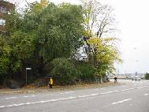
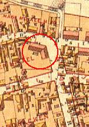
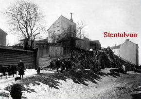

Södermalm i tid och rum. Stockholm
9. Mäster Mikaels gata 12, Stentolvan och TrätolvanStentolvan Trätolvan
Albert Engström bodde som nygift i Stentolvan. Om hans tid i trakten erinrar de trappor som bär hans namn och som leder ner till Renstiernas Gata. Där låg Stentolvan.
|
  Albert Engströms trappor från
Albert Engströms trappor från Renstiernas Gata. 2001 |
 Klicka i cirkeln för vy österifrån! |

Renstiernas Gata mot norr. Längst bort syns den södra gaveln av Stentolvan, Mäster Mikaels Gata 12 B
Från Ett berg vid vattnet, P A Fogelström, 1969
"Nedanstående synnerligen välgjorda teckning föreställer en utsikt från ett av mina många fönster. Jag lever så att säga i min milieu. Teckningen är gjord en morgon kl. 7, då Kolingen och hans släkt koka kaffet till sina morgongökar. De små älskliga barnen, som kasta sten på dynamitkurerna, äro Bobbans broders sonsöner. De ha nämligen icke bättre förstånd. Deras ungdom ursäktar dem. Från mitt arbetsrum ser jag slottet och hela inloppet till denna utmärkta stad. Jag har mycket nöje av ångbåtarna, som passera och tjuta med sina ångvisslor."
Teckningen och texten är från 1898, samma höst som Albert Engström flyttat till Stigberget och "Stockholms finaste våning". På teckningen har Engström ritat in var hans olika figurer bor: Bobban, Kolingen, Bobbans broder etc. Det är bebyggelsen vid nuvarande Sandbacksgatan man ser, det område som nu till större delen upptas av Hantverksinstitutet. Om Engströms bild är sann skulle någon "koling" bott i praktiskt taget varje hus där.
Bilden visar kåkbebyggelse, små trähus. Men den är tagen från ett stort hyreshus, Fjällgatan 12 B, som i ett femtiotal år stod uppe på berget ovanför det nuvarande hörnet av Katarinavägen-Renstiernasgatan.
Det var dit som Engström tog upp Kolingen och Bobban efter sitt första möte med dem. Han bjöd på konjak och bad herrarna sitta ner - fast "jag var verkligen litet orolig, att de skulle lämna levande spår efter sig, men jag kunde ju inte delge dem mina farhågor".Men när fru Engström kom hem sträckte hon "med en majestätisk åtbörd ut sin hand och pekade stumt på dörren med ett så energiskt uttryck i ansiktet, att mina gäster ögonblickligen förstodo".
Och en annan pojke från sekelskiftet, Carl F. V. Sondén som bodde där en kort tid med sina föräldrar, berättar i en duplicerad skrift att familjen snabbt flyttade när man upptäckte att det fanns vägglöss i huset. "Kanske var det ättlingar efter Kolingens vägglöss som drev oss på flykten". Men den gången var Kolingen oskyldig eftersom det var redan 1893 som Sondéns bodde i huset. Det året föddes för övrigt en son till i familjen Sondén, varför den nyföddes syskon en tid fick bo hos prästfamiljen Berg längre österut vid Fjällgatan. Även denna familj hade tidigare bott i Fjällgatan 12 B och där föddes deras son, senare ögonspecialisten och professorn Fredrik Berg, 1887.
Huset kallades i dagligt tal "Stentolvan" i motsats till det lilla grannhuset som hade nummer 12 A, "Trätolvan" eller "Gamla tolvan". Båda tolvorna försvann när Hantverksinstitutet kom till medan däremot husen 6-8-10 i samma kvarter vid nuvarande Mäster Mikaels gata står kvar.
I Stentolvan bodde t.ex. Sveriges förste fredspristagare, f.d. riksdagsmannen och redaktören (grundaren av "Tiden") K. P. Arnoldson. Där bodde flera sjökaptener, där fanns akademiker, direktörer och kontorschefer. Det var nära att även Gustaf Fröding blivit bosatt i Stentolvan - hans syster Cecilia hyrde en lägenhet där 1895 och räknade med att brodern skulle bo hos henne. Men det blev inte av, han fick istället föras till sjukhus.